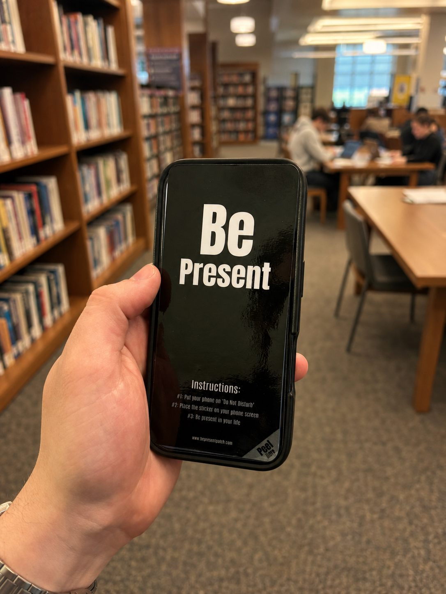
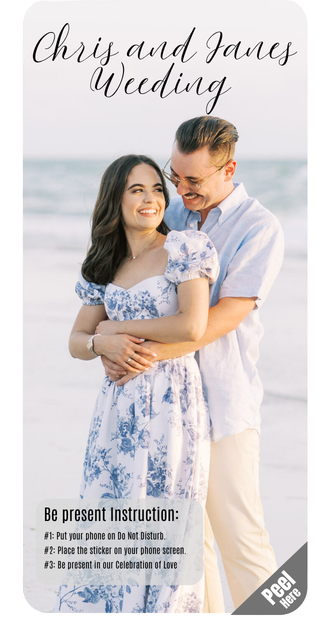
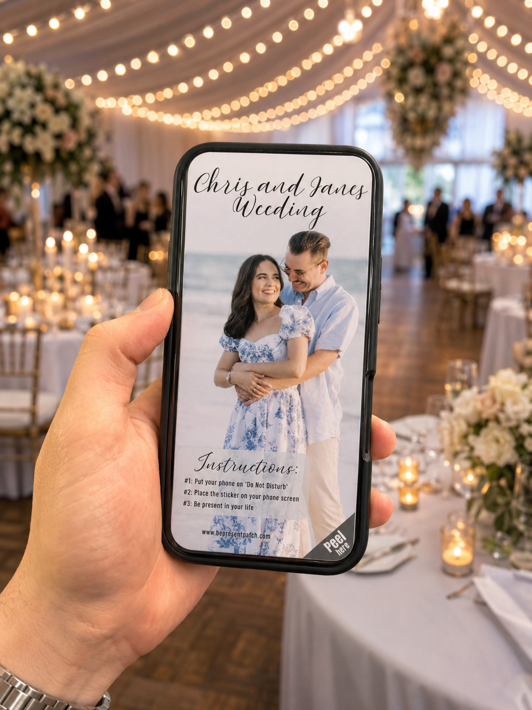

Peel. Stick. Be present.
A physical barrier for the habit you keep trying to break.
The Be Present Patch is a removable sticker that covers your phone screen when you want one more layer between you and distraction. Turn on Do Not Disturb, stick it on, and let the phone become a reminder instead of a temptation.
Sold through TikTok Shop and Amazon. Not a lockbox. Peel it off when it truly matters.

How it works
Three steps that turn intention into friction.
Silence the pull
Turn your phone off or put it on Do Not Disturb before the moment starts.
Cover the screen
Place the Be Present Patch directly over the display so the feed is physically out of sight.
Be in the room
Study, laugh, listen, dance, work, or celebrate. If you need your phone, peel it off.
Where it fits
For any moment where the phone should not be the main character.
W
Weddings
Custom patches with names, photos, and event instructions keep guests present without fully locking away their phones.
S
Schools and studying
A simple focus ritual for classrooms, libraries, homework blocks, finals week, and group study sessions.
C
Comedy clubs
Protect the show from glowing screens while still letting guests access their phone in a real pinch.
P
Parties with friends
Make the phone less inviting so people look up, talk more, and stay part of the night.
W
Working from home
Add a tactile boundary during deep work when your phone sits too close to your laptop.
E
Concerts and events
Similar intent to locked phone pouches, but removable when an emergency or necessary call comes up.


Custom designs
Wedding favors that quietly protect the ceremony.
Add the couple's names, a favorite photo, instructions, and a peel tab. Guests still have their phones for emergencies, but the screen is covered during the vows, speeches, dinner, and dance floor.
- Custom photo, name, and message layouts
- Color and black-and-white design options
- Useful for weddings, parties, comedy clubs, schools, and private events
Why it matters
Phones are everywhere. Attention needs a little backup.
Be Present Patch does not pretend your phone is bad. It gives your brain a pause point before the automatic check, scroll, or camera grab.
91%
of U.S. adults own a smartphone, according to Pew Research Center.
95%
of U.S. teens report having access to a smartphone.
46%
of U.S. teens say they are online almost constantly.
A barrier, not a punishment.
Phone notifications can disrupt attention even when you do not answer them, and research on phone presence suggests devices can pull attention during focus tasks and face-to-face conversation. A removable patch adds friction without the emergency-access problem of a locked pouch.
FAQ
Simple by design.
Is it a lock?
No. The patch creates friction, but you can peel it off if you need to call someone, check an emergency message, or use your device.
Does it replace Do Not Disturb?
It works best with Do Not Disturb or a powered-off phone. The software quiets the alerts; the patch blocks the screen.
Can it be customized?
Yes. Wedding, school, event, and branded designs can use custom photos, names, colors, and instructions.
Where do I buy it?
The website sends buyers to TikTok Shop and Amazon instead of processing checkout directly.
Ready to look up?
Get the Be Present Patch.
Start with one patch for study mode, a set for your friends, or custom event designs for the moments you want everyone to remember.